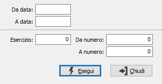

Stampa trasferimento ubicazioni
Il programma attiva la stampa dei trasferimenti in formato documento, sulla base dei parametri di selezione inseriti dall’utente.

DA DATA: data trasferimento da cui si vuole iniziare la selezione. Confermando a vuoto, la selezione inizia dalla prima data valida.
A DATA: data trasferimento con cui si vuole concludere la selezione. Confermando a vuoto, la selezione inizia dalla prima data valida.
ESERCIZIO: indica l'esercizio di magazzino da utilizzare come filtro per la selezione dei trasferimenti.
DA NUMERO: numero del trasferimento da cui si vuole iniziare la selezione. Confermando a vuoto, la selezione inizia dal primo trasferimento compatibile con i restanti parametri.
A NUMERO: numero del trasferimento con cui si vuole concludere la selezione. Confermando a vuoto, la selezione termina con l’ultimo trasferimento compatibile con i restanti parametri.